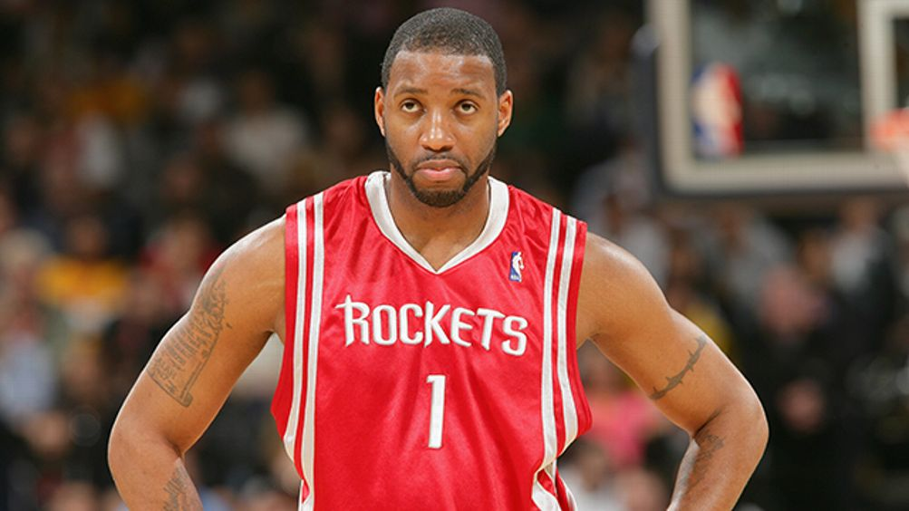
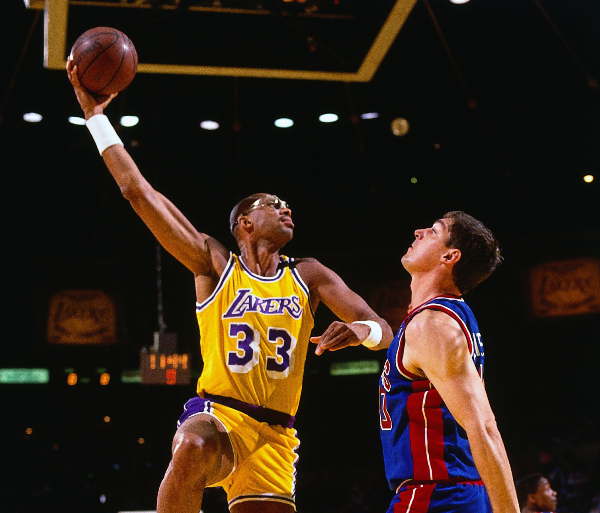
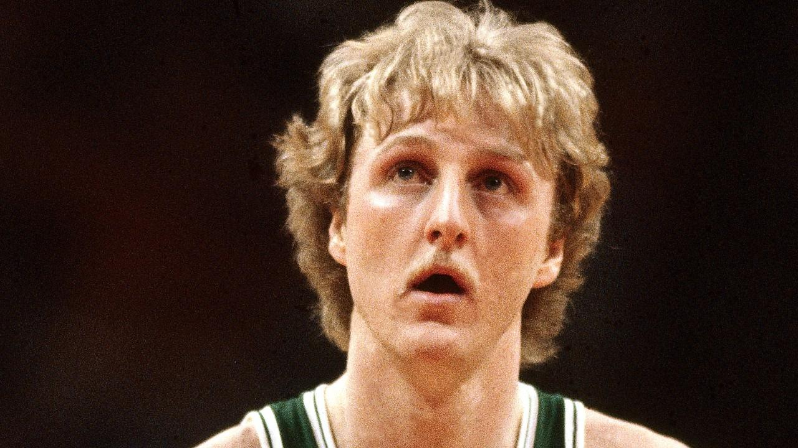
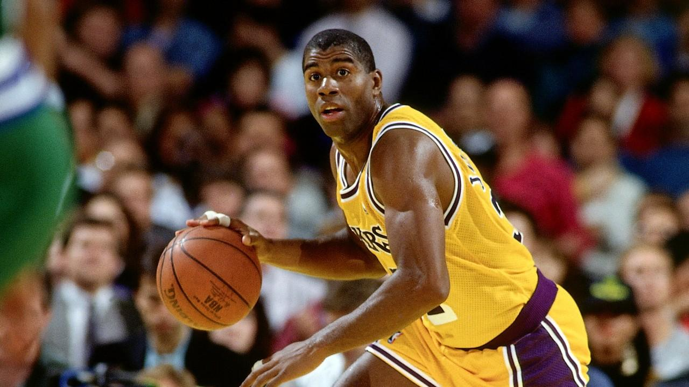
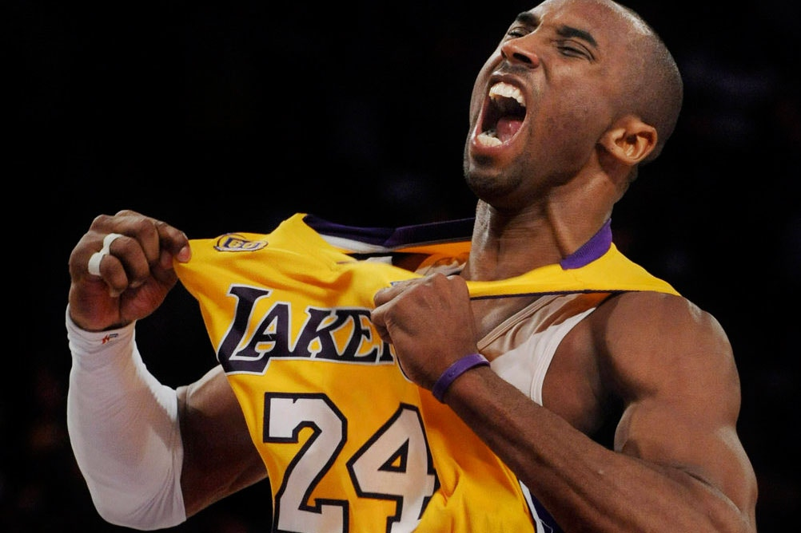
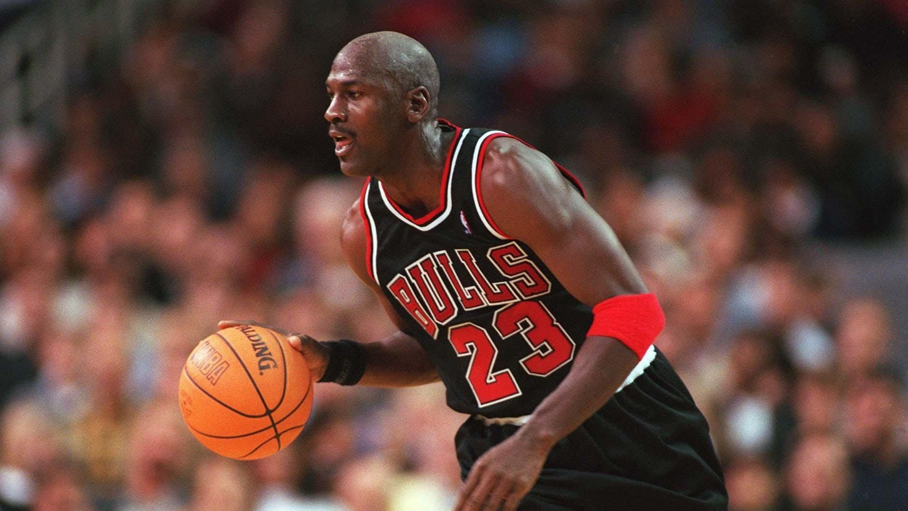

1 / 6
Tracy McGrady

Tracy Lamar McGrady Jr. (born May 24, 1979) is an American retired professional basketball player who is best known for his career in the National Basketball Association (NBA), where he played as both a shooting guard and small forward. McGrady is a seven-time NBA All-Star, seven-time All-NBA selection, two-time NBA scoring champion, and one-time winner of the NBA Most Improved Player Award. He was inducted into the Naismith Memorial Basketball Hall of Fame as part of the Class of 2017.
2 / 6
Kareem Abdul-Jabbar

Kareem Abdul-Jabbar (born Ferdinand Lewis Alcindor Jr.; April 16, 1947) is an American retired professional basketball player who played 20 seasons in the National Basketball Association (NBA) for the Milwaukee Bucks and the Los Angeles Lakers. During his career as a center, Abdul-Jabbar was a record six-time NBA Most Valuable Player (MVP), a record 19-time NBA All-Star, a 15-time All-NBA selection, and an 11-time NBA All-Defensive Team member. A member of six NBA championship teams as a player and two as an assistant coach, Abdul-Jabbar twice was voted NBA Finals MVP. In 1996, he was honored as one of the 50 Greatest Players in NBA History. NBA coach Pat Riley and players Isiah Thomas and Julius Erving have called him the greatest basketball player of all time.
3 / 6
Larry Bird

Larry Joe Bird (born December 7, 1956) is an American professional basketball executive, former coach and former player, most recently serving as president of the Indiana Pacers in the National Basketball Association (NBA). Since retiring as a player for the Boston Celtics, he was a mainstay in the Indiana Pacers organization, but stepped down from the position of president following the first-round of the 2017 Eastern Conference playoffs.
4 / 6
Magic Johnson

Earvin "Magic" Johnson Jr. (born August 14, 1959) is an American retired professional basketball player and current president of basketball operations of the Los Angeles Lakers of the National Basketball Association (NBA). He played point guard for the Lakers for 13 seasons. After winning championships in high school and college, Johnson was selected first overall in the 1979 NBA draft by the Lakers. He won a championship and an NBA Finals Most Valuable Player Award in his rookie season, and won four more championships with the Lakers during the 1980s. Johnson retired abruptly in 1991 after announcing that he had contracted HIV, but returned to play in the 1992 All-Star Game, winning the All-Star MVP Award. After protests from his fellow players, he retired again for four years, but returned in 1996, at age 36, to play 32 games for the Lakers before retiring for the third and final time.
5 / 6
Kobe Bryant

Kobe Bean Bryant (born August 23, 1978) is an American retired professional basketball player and businessman.[3] He played his entire 20-year career with the Los Angeles Lakers of the National Basketball Association (NBA). He entered the NBA directly from high school and won five NBA championships with the Lakers. Bryant is an 18-time All-Star, 15-time member of the All-NBA Team, and 12-time member of the All-Defensive team. He led the NBA in scoring during two seasons, and ranks third on the league's all-time regular season scoring and fourth on the all-time postseason scoring list. He holds the NBA record for the most seasons playing with one franchise for an entire career, and is widely regarded as one of the best basketball players of all time. Bryant is the first guard in NBA history to play for at least 20 seasons.
6 / 6
Michael Jordan

Michael Jeffrey Jordan (born February 17, 1963), also known by his initials, MJ, is an American retired professional basketball player, businessman, and principal owner and chairman of the Charlotte Hornets of the National Basketball Association (NBA). Jordan played 15 seasons in the NBA for the Chicago Bulls and Washington Wizards. His biography on the NBA website states: "By acclamation, Michael Jordan is the greatest basketball player of all time." Jordan was one of the most effectively marketed athletes of his generation and was considered instrumental in popularizing the NBA around the world in the 1980s and 1990s.
❮
❯